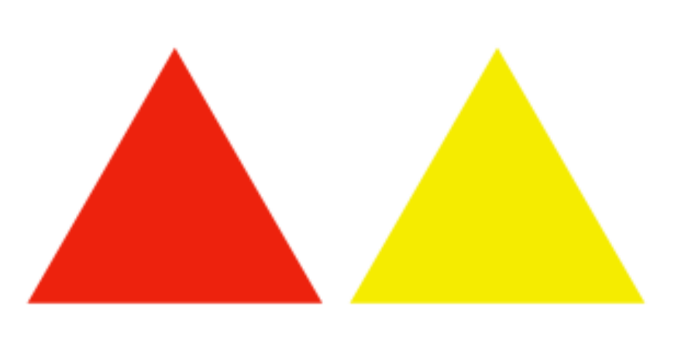
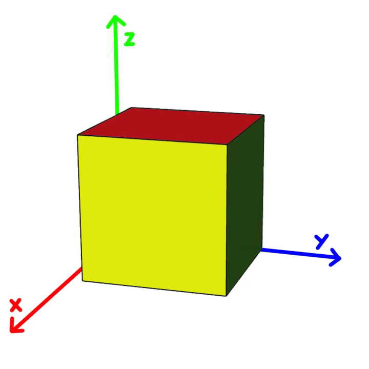
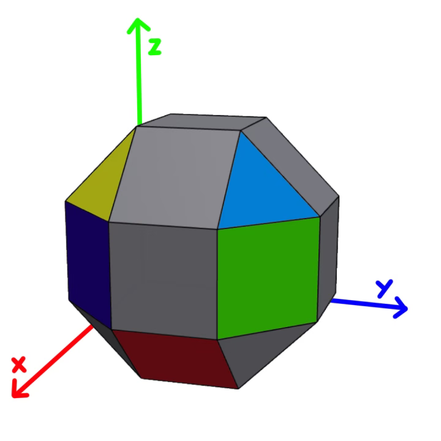

第一小题

绕x轴旋转
1.Region
2.Traditional Japanese sport
绕y轴旋转
1.It shines at night
2.One of greek gods
绕z轴旋转
1.The name of a town in Bosnia and Herzegovia (I apologize for using such an uncommon word)
2.Places where you can see animals
ANSWER:
第二小题

绕x轴旋转
Platform in a hall
绕y轴旋转
Devices we use to creat winds
绕z轴旋转
Look for
Additional requirement: the letter in green square should be a consonant.
ANSWER:
第三小题

绕x轴旋转
1.Corrective, restorative
2.A way to serve beef/Plural of velum
3.(An eight-letter word, no clue provided)
绕y轴旋转
1.A lot of/Gentleness
2.Read story to/Admired person
3.Office presence/Small pond
绕z轴旋转
1.Not fake/Competition on foot
2."Tire" in British English/A man-made house for one kind of animals
3.Sample version/Give a title
ANSWER: